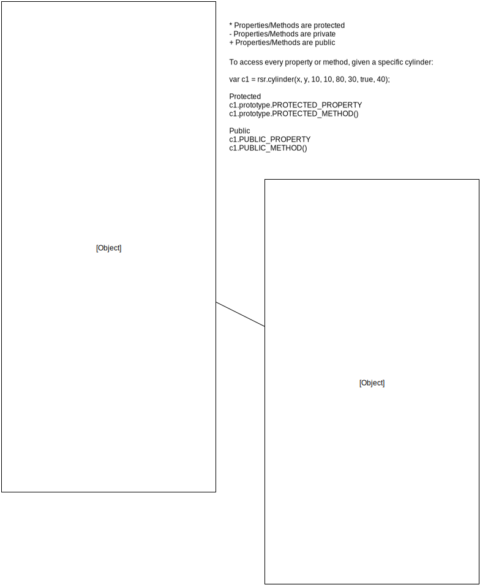

Library Structure
The library is structured in 3 different classes: Cylinder, Container and Content. All of this classes are required in order for the library to work. They draw the Raphael SVG objects and perform the operations through them. The Cylinder class is inherited by both the Container and Content class
The following diagram describes the structure of the Cylinder class:
